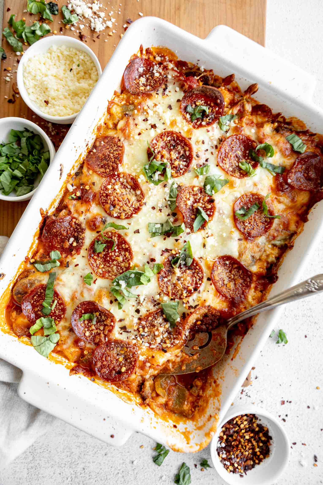

Cauliflower Pizza Casserole

Cauliflower Pizza Casserole (Keto Recipe)
Casseroles are the way to my heart, ya’ll. They’re so easy to just put together and bake – it doesn’t get any better than that! Especially when you make a casserole that’s healthy, low-carb, and so full of delicious cheesy pepperoni pizza flavors and textures. I’m obsessed!
Ingredients
- 4 cups cauliflower florets
- 1 Tablespoon avocado oil
- 8 ounces sliced mushrooms
- 1 medium bell pepper, diced
- 1/2 teaspoon dried basil
- 1/2 teaspoon dried oregano
- 1/4 teaspoon dried thyme
- 1/4 teaspoon dried rosemary
- 1 teaspoon salt
- 1 1/2 cups marinara sauce (low-carb/no sugar added)
- 2-3 ounces uncured pepperoni
- 2 cups shredded mozzarella
- 1/3 cup Parmesan cheese
Instructions
- Cover the cauliflower with about 1 inch of water and microwave for 90 seconds (or heat on the stovetop).
- Drain and pat dry.
- Chop into very small florets. It should look a bit more like cauliflower rice than florets
- Preheat the oven to 400 degrees F
- Heat the oil in a pan and saute the mushrooms for 5-7 minutes until softened.
- Combine the cauliflower, mushrooms, diced bell pepper, and seasoning in a bowl.
- Add a layer of the marinara sauce to the bottom of a baking dish.
- Add in half of the cauliflower mixture, then a layer of sauce, half the pepperoni, half the mozzarella.
- Add in the remaining cauliflower, followed by the sauce, cheese, and pepperoni.
- Add parmesan and bake for 30 minutes.
- Serve with fresh basil and enjoy!
Notes
Carbs: 10 Fat: 20 Protein: 16